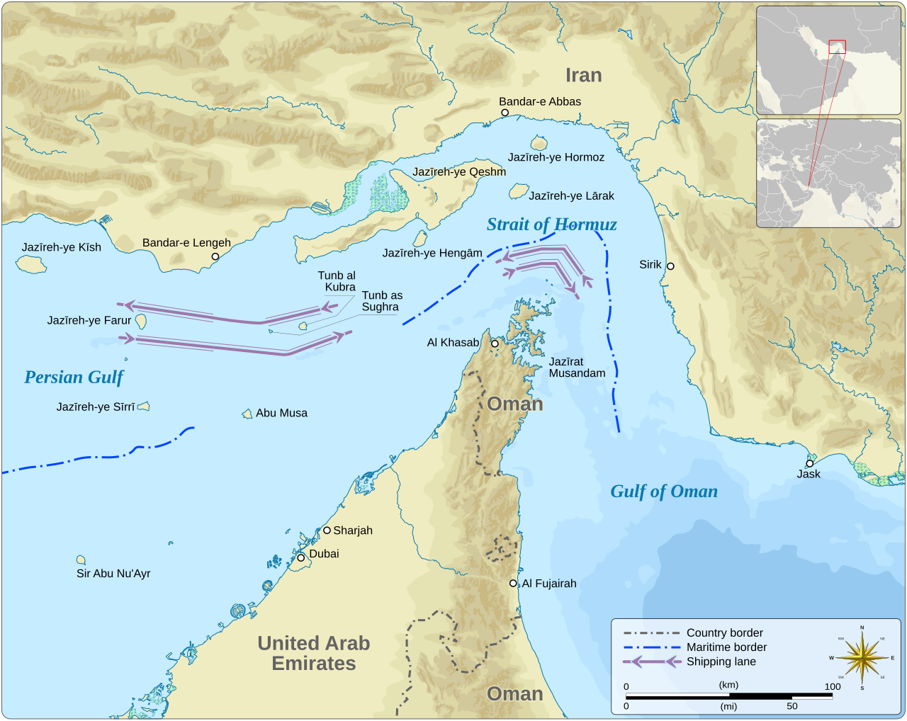
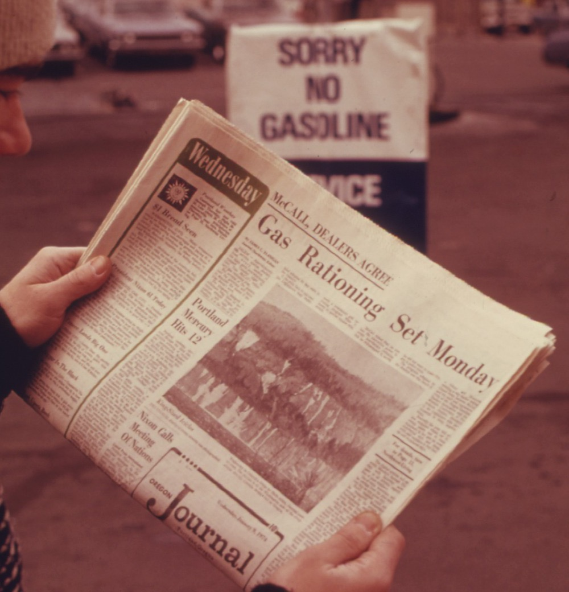
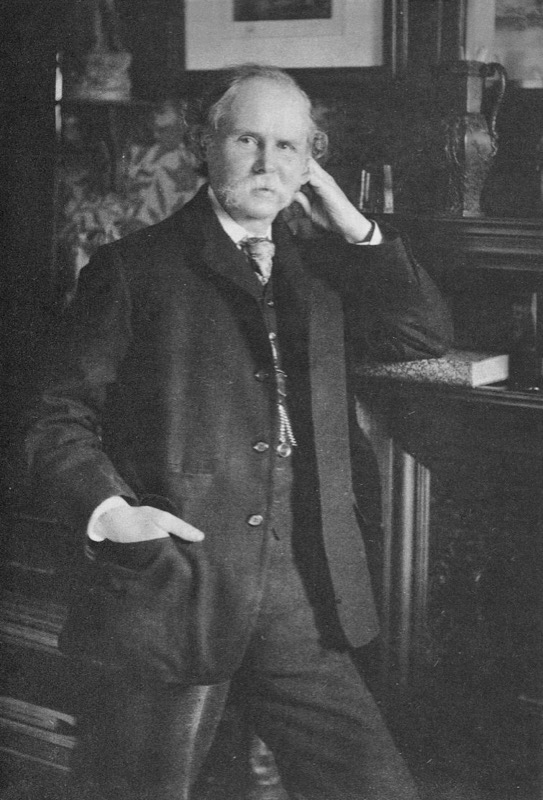
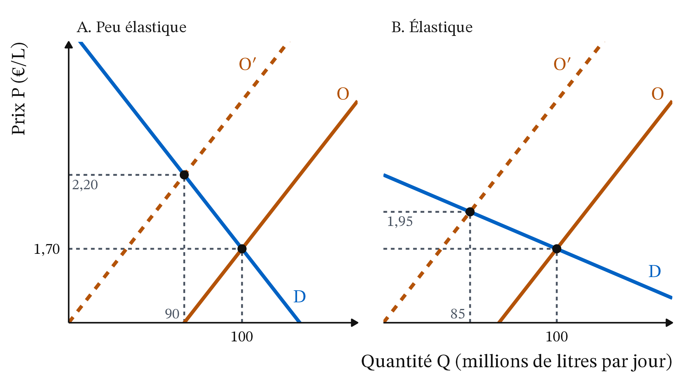
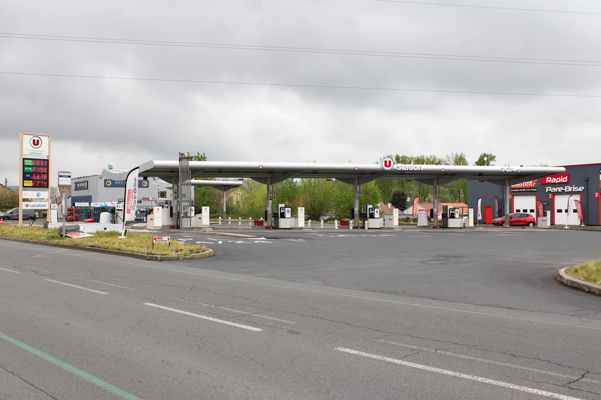

La crise d’Ormuz : pourquoi les carburants ont-ils flambé ?
CM 1 · Partie I · Marchés, prix et régulations
Choc d’offre, coût marginal des producteurs, demande peu élastique à court terme.
- Offre et demande : la quantité offerte augmente avec le prix, la quantité demandée diminue. Au prix d’équilibre P*, elles sont égales, à Q*. Au-dessous de P*, on demande plus qu’on n’offre : c’est une pénurie ; au-dessus, une surproduction.
- Toutes choses égales par ailleurs : on fait varier une seule cause, les autres restant fixes. Comparer l’équilibre avant et après ce changement, c’est la statique comparative.
- Raisonnement à la marge : on fait une unité de plus tant que ce qu’elle rapporte dépasse ce qu’elle coûte.
- Court terme et long terme : selon Marshall, à court terme, le prix dépend surtout de la demande ; à long terme, surtout du coût de production.
- Positif et normatif : l’analyse positive décrit ce qui est (« bloquer le prix crée une pénurie ») ; l’analyse normative dit ce qui devrait être (« il faut bloquer le prix »).
1 La question
Le 28 février 2026, la guerre entre les États-Unis et Israël d’un côté et l’Iran de l’autre ferme de fait le détroit d’Ormuz, « par lequel transite environ un cinquième du pétrole et du gaz liquéfié au niveau mondial » (Insee, Note de conjoncture, 24/03/2026). En France, le prix à la pompe suit très vite. Entre la semaine du 23 février et celle du 12 octobre 2026, le litre d’Euro-super 95 passe de 1,71 € à 2,21 € (+29,3 %), celui de gazole de 1,65 € à 2,33 € (+41,1 %), hausses calculées sur les prix non arrondis (Commission européenne, Weekly Oil Bulletin, prix TTC, consulté le 21/10/2026). Sur un an, en septembre 2026, les prix des produits pétroliers augmentent de 36,2 % (Insee, Informations rapides n° 247, 15/10/2026).

| Date | Journal | Titre |
|---|---|---|
| Janvier 1974 | The Oregon Journal (Portland, États-Unis) | « Gas Rationing Set Monday » (le rationnement de l’essence commence lundi), Figure 2 |
| 08/03/2022 | Le Figaro | « Pourquoi les prix des carburants augmentent-ils si rapidement ? » |
| 09/03/2026 | Le Figaro | « La hausse des coûts d’approvisionnement en pétrole fait flamber les prix des carburants » |
| 30/03/2026 | Sud Ouest | « Prix des carburants : “Si cela continue, je n’aurai plus les moyens d’aller travailler” » |
| 21/09/2026 | Le Parisien | « […] le gouvernement sur tous les fronts face à la flambée du carburant » |

Les titres de 2026 (Table 1) donnent les deux moitiés du raisonnement de la séance : le coût d’approvisionnement monte, donc l’offre recule (un choc d’offre) ; et l’on ne renonce pas à aller travailler du jour au lendemain, donc la demande est peu élastique à court terme. En 1974, aux États-Unis, la presse annonçait un rationnement : la pénurie s’affichait à la pompe.
Trois faits intriguent.
- Un détroit lointain fait bondir un prix payé chaque semaine par des millions de ménages.
- Les Français paient beaucoup plus cher, mais roulent à peine moins.
- Le gazole, moins cher que l’essence avant la guerre, devient plus cher qu’elle.
La question de la séance : pourquoi les carburants ont-ils flambé, et pourquoi si fort ? Pour y répondre, on ajoute deux outils à la loi de l’offre et de la demande : le déplacement d’une courbe et l’élasticité.
Les chiffres sont arrêtés au 14 octobre 2026 (pétrole) et au 12 octobre 2026 (pompe). La situation a pu évoluer ; le raisonnement reste valable.
2 Ce que dit la théorie
2.1 Le prix se forme à la rencontre de l’offre et de la demande

Vers 1891 · Elliott and Fry, domaine public, Wikimedia CommonsAlfred Marshall (1890), Principles of Economics, Londres, Macmillan · école néoclassique. Le prix d’un bien se fixe là où la quantité que les vendeurs veulent vendre égale la quantité que les acheteurs veulent acheter. Pour comprendre un changement de prix, Marshall isole un seul marché et fait varier une seule cause à la fois, les autres restant fixes.
Pour Marshall, offre et demande sont les deux lames d’une paire de ciseaux : le prix monte si l’offre recule ou si la demande augmente. Pour expliquer une flambée, il faut donc dire quelle courbe a bougé, et pourquoi.
Marshall fait aussi de l’élasticité un outil central, que l’on découvre aujourd’hui.
2.2 L’offre reflète le coût du dernier baril produit
Pourquoi l’offre est-elle croissante ? Un producteur vend un baril de plus tant que le prix couvre ce que ce baril lui coûte : c’est le raisonnement à la marge, appliqué au producteur.
Définition 1 (Coût marginal du producteur) Le coût marginal (Cm) est le coût de production d’une unité supplémentaire : un baril, un litre. Sur un marché concurrentiel, la courbe d’offre se lit comme une courbe de coût marginal. Au prix P, on produit toutes les unités dont le coût marginal est inférieur ou égal à P.
Tous les producteurs de pétrole n’ont pas les mêmes coûts. La plupart des exportateurs à bas coût sont réunis dans l’OPEP (La finance pour tous, 21/10/2024), qui compte plusieurs pays du Golfe. D’autres gisements coûtent beaucoup plus cher à exploiter. En rangeant les producteurs du moins cher au plus cher, on obtient une offre croissante. Tant que les capacités suffisent, le prix d’équilibre est le coût marginal du dernier producteur dont on a besoin pour servir la demande.
Définition 2 (Choc d’offre) Un choc d’offre est un événement qui modifie la quantité que les producteurs veulent vendre à chaque prix. La courbe d’offre se déplace : O → O′. Un choc d’offre négatif (guerre, panne, embargo, hausse d’un coût de production) la déplace vers la gauche, ou vers le haut, ce qui revient au même.
Vers la gauche : à chaque prix, il y a moins de barils à vendre. Vers le haut : pour chaque quantité, le dernier baril coûte plus cher (producteur plus coûteux, détour, assurance).
2.3 Déplacement de la courbe ou mouvement le long de la courbe
Définition 3 (Déplacement ou mouvement le long d’une courbe) Quand le prix du bien lui-même change, on se déplace le long des courbes d’offre et de demande : la quantité offerte ou demandée change, la courbe ne bouge pas. Quand une autre cause change (coûts, technique, guerre pour l’offre ; revenus, goûts, anticipations pour la demande), c’est la courbe entière qui se déplace. Cette autre cause est l’un des « toutes choses égales par ailleurs » qui cesse d’être égal.
Définition 4 (Élasticité-prix de la demande) L’élasticité-prix de la demande (e) mesure la réaction de la quantité demandée à une variation du prix : e = variation de Q (en %) ÷ variation de P (en %). Elle est négative, car la quantité baisse quand le prix monte. Si |e| est inférieur à 1, la demande est peu élastique : la quantité varie, en pourcentage, moins que le prix. Le CM 2 en fera un outil de calcul complet.
À court terme, la demande de carburant est peu élastique : changer de voiture, déménager ou s’organiser en covoiturage prend des mois. Selon l’Insee (paiements par carte bancaire dans les stations), une hausse de 1 % du prix réduit la consommation de 0,21 % à 0,40 % seulement à court terme : e est compris entre −0,40 et −0,21 (Insee Analyses n° 86, 06/07/2023, données de septembre 2021 à janvier 2023).
3 Les outils
3.1 Un choc d’offre fait monter le prix et baisser la quantité
- Le choc. Le blocage d’Ormuz retire des barils du marché : à chaque prix, la quantité offerte diminue. La courbe d’offre se déplace de O à O′.
- Le déséquilibre. Au prix P*, les acheteurs veulent toujours Q*, mais les vendeurs offrent beaucoup moins : c’est une pénurie.
- L’ajustement. Les acheteurs prêts à payer plus enchérissent, et le prix monte. En montant, il décourage des achats (on glisse le long de D, de E vers E′) et rend rentables des barils plus coûteux (on glisse le long de O′). En E′, le prix est plus haut et la quantité plus faible.
« Le prix a monté, donc la demande a baissé, donc le prix va redescendre. » Ce raisonnement est faux. La hausse du prix fait baisser la quantité demandée (mouvement le long de D), mais la demande (la courbe D) n’a pas bougé. Seule l’offre s’est déplacée. Le prix ne redescendra que si l’offre revient (réouverture du détroit) ou si la demande se déplace vers la gauche.
3.2 Le prix est fixé par le producteur le plus cher dont on a besoin

Exemple 1 (L’offre de pétrole comme escalier de coûts marginaux) Quatre producteurs fictifs vendent chacun 10 millions de barils par jour (Mb/j). Leurs coûts marginaux sont : Golfe 20 $, X 40 $, Y 60 $, Z 80 $ le baril. Pour simplifier, la demande de court terme est fixe à 25 Mb/j, quel que soit le prix (Figure 4).
- Avant le choc. On range les producteurs du moins cher au plus cher. Golfe, X et Y suffisent à fournir 25 Mb/j ; Y ne produit que 5. Le dernier producteur nécessaire est Y : le prix d’équilibre est de 60 $. Z ne produit pas, car 60 $ ne couvre pas son coût de 80 $.
- Le choc. Le Golfe ne peut plus exporter. L’escalier se décale de 10 Mb/j vers la gauche.
- Après le choc. Pour fournir 25 Mb/j, il faut maintenant X, Y et Z. Le dernier producteur nécessaire est Z : le prix passe à 80 $.
- La variation. (80 − 60) ÷ 60 = 0,333 : le prix monte de 33 %, alors qu’aucun producteur restant n’a vu son coût augmenter.
- Qui gagne ? X touchait 60 − 40 = 20 $ de plus que son coût sur chaque baril ; il touche maintenant 80 − 40 = 40 $. Les producteurs épargnés par le choc gagnent à la hausse.
Le blocage d’Ormuz retire du marché des barils du Golfe, parmi les moins chers à produire. Tant qu’il reste des capacités, le prix est fixé par des barils plus coûteux. Mais si même le producteur le plus cher ne suffit plus (ici, une demande de 35 Mb/j après le choc), aucun coût ne fixe le prix : il monte au-dessus du coût de tous les producteurs, jusqu’à ce que des acheteurs renoncent. Il sert alors à rationner la demande. En 2026, on est plutôt dans ce second cas : à court terme, les autres producteurs ne peuvent pas produire beaucoup plus, et le Brent atteint 126,55 $ le 14 octobre. C’est le court terme de Marshall : le prix dépend surtout de la demande.
3.3 Une demande peu élastique : le prix monte beaucoup, la quantité baisse peu
On chiffre maintenant la Figure 3 avec des nombres ronds.
Exemple 2 (Un choc d’offre sur un marché de carburant fictif) Sur un marché fictif de carburant, Q est en millions de litres par jour et P en euros par litre. Le tableau donne les quantités demandées et offertes, avant et après le choc.
| Prix P (€/L) | 1,50 | 1,70 | 1,90 | 2,00 | 2,20 | 2,40 |
|---|---|---|---|---|---|---|
| Quantité demandée | 104 | 100 | 96 | 94 | 90 | 86 |
| Quantité offerte avant le choc (O) | 96 | 100 | 104 | 106 | 110 | 114 |
| Quantité offerte après le choc (O′) | 76 | 80 | 84 | 86 | 90 | 94 |
- L’équilibre initial. À 1,70 €, demande et offre valent toutes deux 100 : P* = 1,70 € et Q* = 100.
- Le choc. À chaque prix, l’offre perd 20 millions de litres : la ligne O′ se déduit de la ligne O en retirant 20.
- La pénurie. Au prix de 1,70 €, on demande 100 mais on n’offre plus que 80. Il manque 20 : le prix monte.
- Le nouvel équilibre. À 2,20 €, on demande 90 et on offre 90 : P*′ = 2,20 € et Q*′ = 90.
- Les variations. Le prix passe de 1,70 € à 2,20 €, soit 0,50 ÷ 1,70 = +29,4 %. La quantité passe de 100 à 90, soit −10 %.
- L’élasticité. e = −10 ÷ 29,4 ≈ −0,34. La demande est peu élastique, dans la fourchette de l’Insee.
- L’énigme résolue. L’offre a perdu 20, mais la quantité échangée n’a baissé que de 10 : la hausse du prix a convaincu les acheteurs de renoncer à 10, et les vendeurs restants d’offrir 10 de plus le long de O′.
Refaisons le calcul avec une demande élastique, plus sensible au prix : Q = 202 − 60 P. Elle passe aussi par 100 à 1,70 €, où son élasticité vaut environ −1. Avec la même offre et le même choc, le nouvel équilibre est à 1,95 € et 85 millions de litres. Le prix ne monte que de 14,7 %, mais la quantité baisse de 15 %. Même choc, deux histoires : plus la demande est inélastique, plus le choc passe dans le prix et moins il passe dans la quantité.

3.4 Application : la flambée de 2026

![Graphique en lignes de janvier à mi-octobre 2026, une valeur par semaine. L'Euro-super 95 en bleu reste vers 1,70 euro jusqu'à fin février, vaut 2,04 euros mi-avril, monte jusqu'à 2,11 euros fin mai, redescend à 1,92 euro début juillet, puis atteint 2,22 euros fin septembre et y reste en octobre. Le gazole en ambre part de 1,59 euro en janvier, culmine à 2,31 euros mi-avril, retombe à 1,86 euro début juillet, puis monte à 2,38 euros fin septembre et 2,33 euros le 12 octobre. Le gazole passe au-dessus de l'essence début mars, de justesse sous elle la semaine du 1er juin, puis franchement sous elle de fin juin à mi-juillet, et de nouveau au-dessus à partir du 20 juillet. Une ligne verticale marque le 28 février, date de la fermeture du détroit d'Ormuz.](cm1_files/figure-html/fig-prix-pompe-1.png)
Le choc d’offre sur le pétrole brut. Avant la guerre, l’Agence internationale de l’énergie (AIE) prévoyait pour 2026 un excès d’offre de 3,7 millions de barils par jour, et le Brent valait en moyenne moins de 70 $ en 2025 (Insee, 24/03/2026). Le 12 mars, l’AIE prévoit une baisse de la production de 8 Mb/j pour le mois (ibid.). Le Brent au comptant, cotation « Europe », passe de 71,66 $ le 26 février à 118,42 $ le 20 mars, puis à 126,55 $ le 14 octobre 2026 (EIA, consulté le 21/10/2026).
![Graphique en ligne du prix du Brent en 2026, en dollars par baril. De janvier à fin février, il oscille entre 61 et 73 dollars, autour de la moyenne de 2025, 69 dollars, tracée en tirets. Une ligne verticale marque le 28 février, fermeture du détroit d'Ormuz. Le prix monte alors très vite, à 118 dollars le 20 mars et 138 dollars le 7 avril, son plus haut. Il redescend par à-coups jusqu'à moins de 70 dollars début juillet, remonte dès la mi-juillet, à 105 dollars le 23, puis au-dessus de 100 dollars de façon durable à partir de septembre, et se tient au-dessus de 125 dollars en octobre, à 126,55 dollars le 14.](cm1_files/figure-html/fig-brent-1.png)
La Figure 8 montre ce choc d’offre : le prix du brut double presque en six semaines, jusqu’à 138,21 $ le 7 avril.
De la Figure 8 au prix payé, le chemin passe par le raffinage, le transport, la distribution et deux taxes. Le tableau 2 décompose le litre d’Euro-super 95 avant et après la hausse.
| Étape | Qui perçoit | 23 février | 12 octobre | Variation |
|---|---|---|---|---|
| Brut, raffinage, transport, distribution (prix hors taxes) | Producteurs, raffineurs, distributeurs | 0,735 € | 1,153 € | +0,418 € (83 %) |
| Accise | État | 0,690 € | 0,690 € | 0 € |
| TVA à 20 % | État | 0,285 € | 0,369 € | +0,084 € (17 %) |
| Prix à la pompe, taxes comprises | Automobiliste | 1,710 € | 2,212 € | +0,502 € |
Pour le gazole, la part du hors-taxes dans la hausse est mécaniquement la même (83 %), l’accise étant fixe : le choc passe tout entier par l’amont de la chaîne, que l’État ne fixe pas.
Un second choc d’offre, sur le gazole. L’Europe importe une partie de son gazole raffiné dans le Golfe : le prix du diesel augmente donc plus que l’effet mécanique du brut (Insee, Note de conjoncture, juin 2026). Fin juillet, la Russie décide un moratoire sur ses exportations de diesel, puis le prolonge ; fin août, les hostilités reprennent entre l’Iran et les États-Unis et des raffineries sont endommagées (AFP, Connaissance des Énergies, 10/09/2026). Le gazole subit deux déplacements de l’offre : celui du brut, sa matière première, et celui du raffinage. D’où sa hausse de 41 % contre 29 % pour l’essence entre le 23 février et le 12 octobre (Figure 7).
Une demande peu élastique. Avec e ≈ −0,3 et une hausse de prix d’environ 40 %, comme pour le gazole, la quantité ne baisse que d’environ 0,3 × 40 = 12 %. C’est une première approximation : l’élasticité de court terme est appliquée à une hausse étalée sur huit mois. La facture est alors multipliée par 1,40 × 0,88 ≈ 1,23 : elle augmente d’environ 23 %. Les ménages achètent presque autant de litres, beaucoup plus cher.
![Graphique en lignes, mois par mois, des livraisons de gazole routier et d'essence en France. La ligne grise de 2025 va de janvier à décembre, entre 3,3 et 4,1 millions de tonnes. La ligne bleue de 2026 va de janvier à juillet. Elle est sous la ligne grise en janvier et février, avant la ligne verticale qui marque la fermeture d'Ormuz. Ensuite, elle reste proche de la ligne grise en mars et en juin, et en dessous en avril, mai et juillet ; le plus grand écart est en mai, 3,2 contre 3,6 millions de tonnes.](cm1_files/figure-html/fig-livraisons-1.png)
La Figure 9 confirme le deuxième fait de la séance : de mars à juillet 2026, il s’est livré 4,9 % de carburant routier de moins qu’un an plus tôt, alors que le litre de gazole a coûté jusqu’à 40 % de plus que la semaine du 23 février (2,31 € la semaine du 13 avril, Figure 7). Mais en janvier et février, avant la guerre, l’écart était déjà de 6,0 % (Eurostat, consulté le 21/10/2026) : toutes choses égales par ailleurs, la part de la baisse due au prix est donc faible. Les livraisons ne font pas apparaître les −12 % : elles mêlent stocks, ruée de mars et tendance ; on ne peut pas en tirer l’élasticité.
Un déplacement de la demande en mars. Les 2 et 3 mars 2026, plus de 6 millions de paiements par carte sont demandés dans les stations, une « ruée anticipative » (The Conversation, 13/10/2026). Le prix a encore peu bougé : les anticipations déplacent la demande vers la droite pendant quelques jours.
Ne pas tirer une élasticité de n’importe quelle baisse. Du 11 au 20 septembre 2026, la consommation de carburant chute de 30 % (The Conversation, 13/10/2026), tandis que le gazole passe d’environ 2,30 €/L (AFP, d’après les données gouvernementales, 10/09/2026) à un record de 2,41 €/L en moyenne nationale le 20 septembre (The Conversation, 13/10/2026), soit environ +5 %. Ces prix journaliers ne viennent pas de la série de la Figure 7. L’article y voit une réaction au prix. Mais diviser −30 % par +5 % donnerait e = −6, invraisemblable au regard de l’Insee : le prix seul ne suffit pas. Une partie des stations sont aussi à sec (17 % le 21/09, voir plus bas). Quand on ne trouve pas de carburant, la quantité achetée baisse sans que la demande ait changé : on ne lit plus un point de la courbe D. L’élasticité se mesure toutes choses égales par ailleurs.
3.5 Un prix plafonné sous l’équilibre crée des files d’attente : le cas TotalEnergies
Depuis mars 2026, par intermittence, TotalEnergies plafonne ses prix. Depuis le 22 juillet, dans ses quelque 3 300 stations de France hexagonale, le litre de sans-plomb 95 (SP95-E10) ne dépasse pas 1,99 € et celui de gazole 2,25 € (TotalEnergies, communiqué, 22/07/2026). C’est un plafond (un prix maximal) fixé par une entreprise, non par l’État. Le 12/10/2026, l’entreprise annonce qu’elle maintient son plafond de 2,25 € sur le gazole au-delà de fin janvier 2027 (TotalEnergies, communiqué, 12/10/2026). Le mécanisme est celui de la pénurie de la Figure 3 : le prix est maintenu au-dessous de l’équilibre.
- Le report de clientèle. Le 23/09/2026, le SP95-E10 coûte en moyenne 2,16 € en France, plus de 15 centimes au-dessus du plafond (AFP, Connaissance des Énergies, 24/09/2026). Les clients affluent chez Total : sa part de marché passe de 22 % habituellement à 25 % fin août, selon son PDG (AFP, 29/08/2026), puis dépasse 30 % en octobre selon l’entreprise (communiqué, 12/10/2026).
- Les ruptures. Les livraisons ne suivent pas. Le 21/09/2026, 17 % des stations manquent d’au moins un carburant, et 91 % d’entre elles sont des stations Total : le ministre de l’Économie y voit « la conséquence directe du plafonnement du prix », tout en jugeant l’approvisionnement du pays assuré (AFP, 21/09/2026). La pénurie se concentre là où le prix est bloqué.
- La file d’attente. Des gérants décrivent des disputes dans la file et des cuves vides (AFP, 24/09/2026). Le temps perdu et le risque de trouver la station à sec s’ajoutent au 1,99 € : la file rationne à la place du prix.
- Le coût pour l’entreprise. Son PDG estime le manque à gagner à 250 à 300 millions d’euros fin août, estimation non vérifiée, pour un résultat net ajusté de 11,4 milliards de dollars sur les six premiers mois de 2026 (AFP, 29/08/2026).
4 Effets de répartition
4.1 Les ménages qui ne peuvent pas se passer de la voiture paient le plus
Par revenu. En 2021, 10,6 % des ménages motorisés consacraient au carburant plus d’un mois de revenu par an ; aux prix du printemps 2026, ce serait 22,4 %, à revenus et kilomètres inchangés (Insee Première n° 2125, 08/09/2026). Les ménages modestes consacrent une part plus élevée de leur budget à l’énergie (BCE, citée par l’AFP, Connaissance des Énergies, 23/09/2026), sans réduire davantage leur consommation : l’élasticité « varie peu selon le revenu » (Insee Analyses n° 86). La hausse pèse donc plus lourd pour eux.
Par territoire. Près de 90 % des actifs ruraux vont au travail en voiture, contre moins de 60 % dans les pôles urbains (AFP, 23/09/2026, d’après l’Insee). Ils ne sont pas moins sensibles au prix : l’élasticité varie peu selon le lieu de vie (−0,47 en zone rurale, −0,41 en zone urbaine). Mais ils consomment plus de litres, donc la hausse leur coûte plus en euros (Insee Analyses n° 86).
Par usage. Les gros rouleurs sont les moins sensibles au prix : l’élasticité vaut −0,32 pour le quart qui consomme le plus, contre −1,06 pour le quart qui consomme le moins (Insee Analyses n° 86).
Par génération. Aucune source ouverte pour cette séance ne chiffre l’effet par âge. Le mécanisme passerait par l’usage : un actif qui va au travail en voiture peut difficilement supprimer ce trajet.
4.2 Ceux qui vendent profitent de la hausse
Les producteurs épargnés et les raffineurs. Comme X dans l’Exemple 1, les producteurs hors du Golfe vendent plus cher sans que leurs coûts aient changé. Quand le raffinage devient le goulot d’étranglement, l’écart entre le prix du gazole et celui du brut profite aux raffineries intactes.
L’État : un effet ambigu. L’accise, montant fixe par litre, rapporte moins si l’on vend moins de litres ; la TVA, pourcentage du prix, rapporte plus par litre quand le prix monte. En 2026, la perte d’accise l’emporte : au 30 septembre, les recettes de carburant de l’État reculent de 383 millions d’euros sur un an, avec 798 millions de TVA en plus et 1,18 milliard d’accises en moins (The Conversation, 13/10/2026). Le CM 2 dira qui paie vraiment un impôt.
5 La controverse
5.1 Faut-il bloquer les prix à la pompe ou aider les automobilistes ?
On sépare ce que l’analyse établit (positif) de ce qui relève d’un jugement (normatif).
Ce que l’analyse établit (positif).
- Bloquer le prix au-dessous du nouvel équilibre P*′ recrée la pénurie de la Figure 3. Il faut alors rationner : files d’attente, quotas par client, stations à sec. Le plafond de TotalEnergies le montre en 2026 dans ses propres stations (Section 3.5) ; les CM 3 et 4 chiffreront ce mécanisme.
- Une remise générale à la pompe baisse le prix payé par tous, coûte de l’argent public, affaiblit l’incitation à économiser et profite davantage, en euros, aux gros consommateurs. En 2022, la remise a été de 0,18 €/L TTC au 1er avril, puis de 0,30 €/L en septembre, ramenée à 0,10 €/L à la mi-novembre, avant sa suppression au 1er janvier 2023 ; elle a évité de 51 à 81 € de dépense par ménage automobiliste (Insee Analyses n° 86, 06/07/2023).
- Une aide ciblée laisse le prix jouer son rôle de signal et concentre la dépense sur les ménages les plus exposés, à condition de savoir les identifier. En septembre 2026, le gouvernement a élargi une aide aux travailleurs modestes « grands rouleurs », dans un plan de 450 millions d’euros (ministère de la Transition écologique, 22/09/2026, cité par l’AFP le 23/09/2026).
- Libérer des stocks stratégiques agit sur l’offre : O′ se déplace vers la droite et le prix baisse, le temps que durent les stocks. Après la libération de stocks de diesel, TotalEnergies annonce un avantage d’environ 10 centimes par litre de gazole du 1er novembre 2026 au 31 janvier 2027 (communiqué, 12/10/2026).
- Taxer les profits exceptionnels des vendeurs ne change pas le prix à court terme si l’offre n’en dépend pas, et finance les aides. L’Union européenne l’a fait en 2022 avec une « contribution de solidarité temporaire » sur le pétrole brut, le gaz, le charbon et le raffinage (règlement (UE) 2022/1854 du Conseil, 6 octobre 2022).
Ce qui relève d’un jugement (normatif). Le choix dépend de l’objectif.
- L’efficacité : le prix doit-il signaler la rareté ?
- L’équité : faut-il d’abord protéger les ménages captifs de la voiture ?
- Le climat : un prix élevé pousse à la sobriété, au risque de la colère sociale ; en 2018, la hausse prévue de la contribution climat-énergie a été gelée.
- Le coût budgétaire : qui finance l’aide ?
- La concurrence : le plafond de TotalEnergies protège-t-il les automobilistes, ou sert-il une stratégie commerciale ? Des distributeurs parlent de « concurrence déloyale », et une fédération de stations indépendantes a saisi l’Autorité de la concurrence mi-juillet 2026 (AFP, Connaissance des Énergies, 15/09/2026).
Les écoles en présence. Les néoclassiques, après Marshall, laissent le prix signaler la rareté et aident les plus modestes par des transferts ciblés : deux objectifs, deux instruments (règle de Tinbergen, 1952). Des post-keynésiens notent qu’en situation d’urgence de grandes entreprises peuvent relever leurs prix au-delà de leurs coûts (Weber et Wasner, 2023) ; ils préfèrent contenir dès le départ quelques prix clés, comme ceux de l’énergie. Le débat porte moins sur le mécanisme de la Figure 3 que sur ce qu’on accepte de payer, en pénurie ou en argent public, pour en atténuer les effets.
En France, les prix sont en principe « librement déterminés par le jeu de la concurrence » (Code de commerce, art. L410-2). Le même article permet au Gouvernement de prendre, par décret en Conseil d’État, des mesures temporaires d’au plus six mois contre des hausses ou des baisses excessives de prix, « dans un secteur déterminé », en cas de crise, de circonstances exceptionnelles ou de situation manifestement anormale du marché. Bloquer les prix à la pompe est donc juridiquement possible, mais encadré et provisoire.
6 À retenir
- Pour expliquer une hausse de prix, il faut dire quelle courbe s’est déplacée, et pourquoi (Marshall).
- La courbe d’offre reflète le coût marginal des producteurs : en temps normal, le prix est fixé par le coût du dernier producteur dont on a besoin.
- Le blocage d’Ormuz est un choc d’offre négatif (O → O′) : le prix monte et la quantité échangée baisse.
- Une variation du prix du bien fait glisser le long d’une courbe ; une autre cause (guerre, coûts, anticipations) déplace la courbe.
- À court terme, la demande de carburant est peu élastique (e entre −0,40 et −0,21, Insee) : le choc passe surtout dans le prix et pèse sur les ménages captifs de la voiture.
- Bloquer les prix crée une pénurie ; aider les ménages coûte de l’argent public : choisir entre les deux relève d’un jugement normatif.
7 Pour aller plus loin
Vidéos
Dessine-moi l’éco · « Le pétrole est-il toujours de “l’or noir” ? » · 3 min 27 · 2017 : les chiffres datent, le raisonnement reste utile
Arte, Le Dessous des cartes · « Golfe Persique : vers un choc pétrolier ? » · 3 min 33 · 10/03/2026
Articles
- The Conversation, S. Collot, « Ruée anticipative début mars, puis effondrement en septembre : comment expliquer la consommation de carburant en France en 2026 ? », 13/10/2026. Lien
- The Conversation, S. Ruel, « Pourquoi le prix de l’essence à la pompe ne baisse pas aussi vite qu’il monte », 03/04/2026, mis à jour le 07/04/2026. Lien
- AFP, Connaissance des Énergies, « Le diesel flambe sous la pression d’Ormuz et des raffineries russes », 10/09/2026. Lien
- AFP, Connaissance des Énergies, « Carburants : les stations-service indépendantes ont “honte d’afficher ces prix” », 24/09/2026. Lien
Sources des chiffres
AFP, Connaissance des Énergies, « La flambée du pétrole et du gaz fragilise les ménages français », mis à jour le 23/09/2026. Lien
AFP, Connaissance des Énergies, « La France organise sa réponse face aux tensions sur les carburants », 21/09/2026. Lien
AFP, Connaissance des Énergies, « Prix des carburants : “il n’y aura plus jamais de plafonnement chez TotalEnergies” si cette mesure est adoptée, prévient Patrick Pouyanné », 29/08/2026. Lien
AFP, Connaissance des Énergies, « TotalEnergies, victime de son succès avec ses carburants plafonnés à la pompe », 15/09/2026. Lien
TotalEnergies, communiqué, « Compte tenu de la reprise du conflit au Moyen-Orient, TotalEnergies remet en place le plafonnement sur l’essence à 1,99 €/l dans toutes ses stations-service en France », 22/07/2026. Lien
TotalEnergies, communiqué, « Diesel en France : TotalEnergies s’engage à restituer aux Français l’avantage lié à la libération de stocks stratégiques de diesel », 12/10/2026. Lien
Insee, « Comment les automobilistes ajustent leur consommation de carburant aux variations de prix à court terme », Insee Analyses n° 86, 06/07/2023. Lien
Insee, E. Lenzi, K. Masson, V. Mora, « Les dépenses de carburant pèsent davantage sur le budget des ménages ruraux », Insee Première n° 2125, 08/09/2026. Lien
Insee, « En septembre 2026, les prix à la consommation augmentent de 3,1 % sur un an », Informations rapides n° 247, 15/10/2026. Lien
Insee, « Énergie et matières premières », Note de conjoncture, 24/03/2026. Lien
Insee, « L’industrie tient la barre, les ménages accusent le coup », Note de conjoncture, 17/06/2026. Lien
EIA, « Europe Brent Spot Price FOB » (dollars par baril, série quotidienne), consulté le 21/10/2026. Lien
Commission européenne, Weekly Oil Bulletin (prix des carburants par pays, chaque semaine). Lien
Code de commerce, art. L410-2, sur Légifrance. Lien
Règlement (UE) 2022/1854 du Conseil du 6 octobre 2022 sur une intervention d’urgence pour faire face aux prix élevés de l’énergie, Journal officiel de l’Union européenne. Lien
I. M. Weber et E. Wasner, « Sellers’ inflation, profits and conflict: why can large firms hike prices in an emergency? », Review of Keynesian Economics, vol. 11, n° 2, 2023. Lien
J. Tinbergen, On the Theory of Economic Policy, Amsterdam, North-Holland, 1952.
La finance pour tous, « Évolution du prix du pétrole », mis à jour le 21/10/2024. Lien